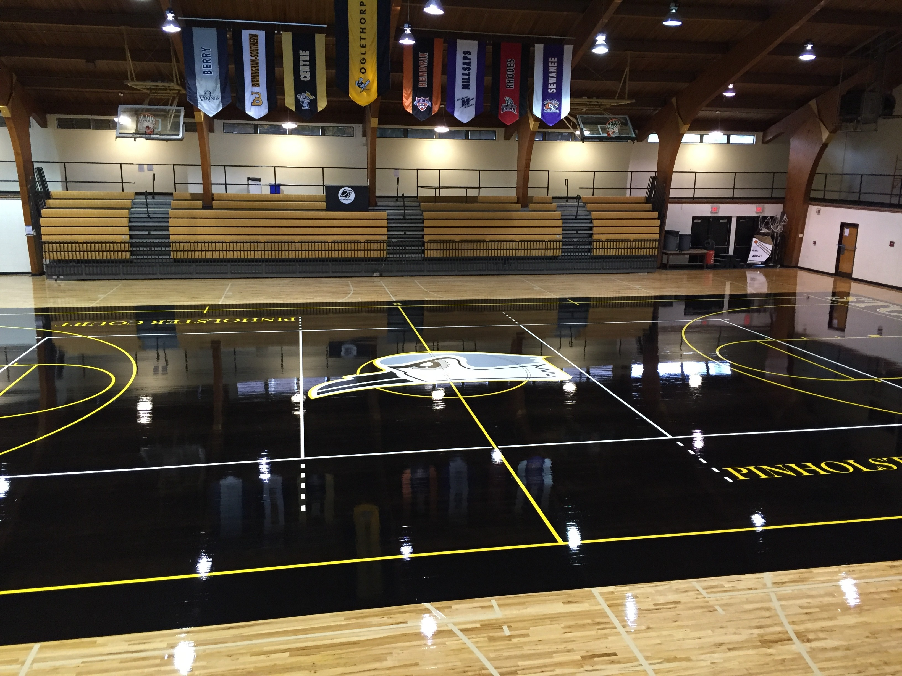

Our Strength & Conditioning gym @ Level 1 helps to tone your body, build muscle, relieve tension, pump up your cardio and get energised.

Our Boxing gym @ Level 2 utilises punches, footwork, and head movement. Through proper body mechanics, our boxing classes teaches you self-defense as well as the newest fitness concept to Singapore.

Our basketball gym @ Level 3 & 4 boasts a triple-stained black playing surface and features unique gameday atmospheres for basketball and volleyball matches. Our home court also hosts official matches with full length retractable spectator seating.

Located in the Central, our multi-purpose gym is accessible with a 5 minute walk from Clarke Quay Station.
Not a FitMax member? Sign up here now!